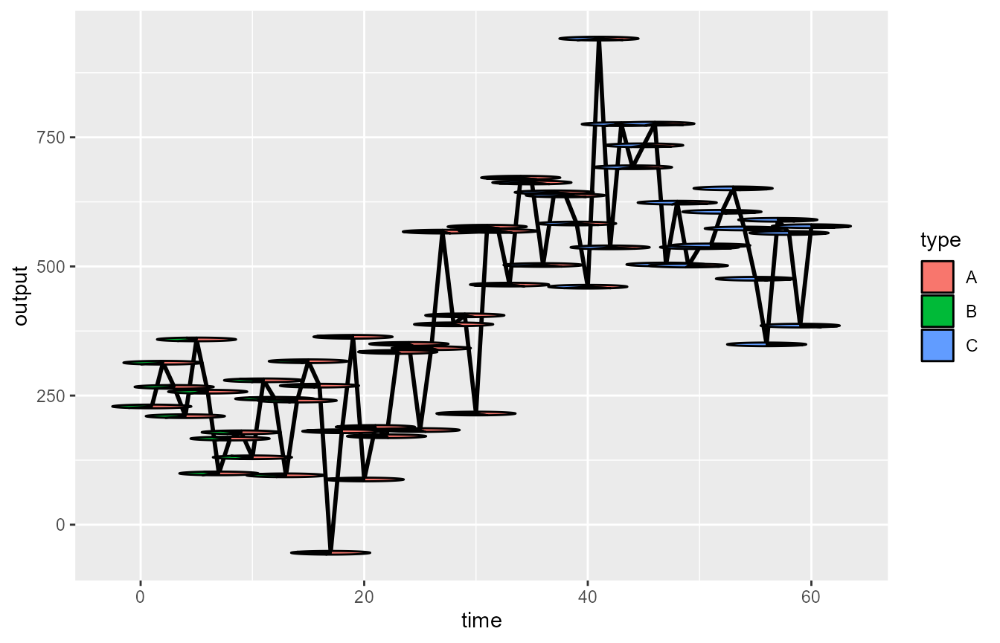
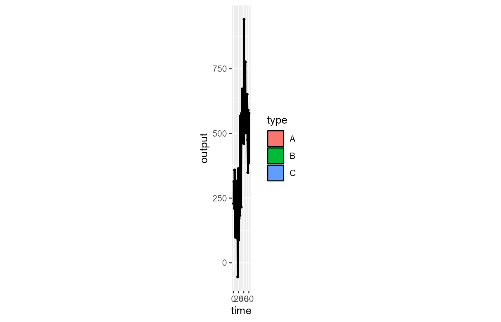
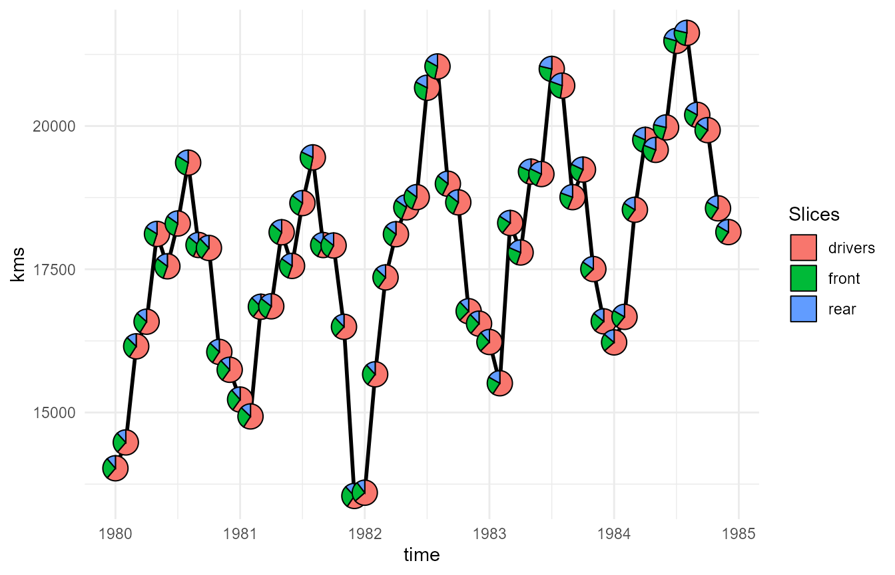
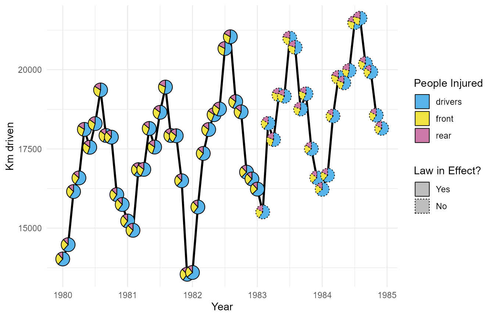

This examples shows the use of the use of the PieGlyph
package to replace the points in a time series plot with pie charts
showing the proportions of different attributes. Generally, time series
plots don’t have an aspect ratio of 1 as the width of the plot is very
large compared to the height. Due to this wide nature of time series
plots previous attempts at adding pie-charts in the plot either resulted
in the pie-charts getting converted into ellipses or forced the user to
make the plot have equal dimensions, resulting in plots becoming
squashed between white space. Both these approaches cause problems when
interpreting from the plots.
The PieGlyph package attempts to solve this problem by
creating axis invariant pie-charts which wouldn’t get squashed into
ellipses and also wouldn’t get scaled along with the plot dimensions.
Simulate data
plot_data <- data.frame(time = 1:60,
output = rnorm(60, c(seq(300, 200, length.out = 20),
seq(200, 700, length.out = 20),
seq(700, 500, length.out = 20)), 100),
A = seq(6, 3, length.out = 60),
B = seq(4, 1, length.out = 60),
C = seq(0, 6, length.out = 60))
The simulated data has 60 rows and 5 columns and shows the performance
of a particular system at 60 different time points. The variable
output contains the system performance while
time measures the different time points. The variables
A, B, and C measure the
attributes of the system over time.
head(plot_data)
#> time output A B C
#> 1 1 184.1338 6.000000 4.000000 0.0000000
#> 2 2 266.2534 5.949153 3.949153 0.1016949
#> 3 3 258.0759 5.898305 3.898305 0.2033898
#> 4 4 256.0043 5.847458 3.847458 0.3050847
#> 5 5 175.6260 5.796610 3.796610 0.4067797
#> 6 6 450.8577 5.745763 3.745763 0.5084746The attributes are assumed to be related to the system performance and they too change over time. It would be difficult to visualise the performance of the system over time, whilst also showing the evolution of the system attributes over time using a simple time series plot. However, if we replace the points in the plot with pie-charts we can simulataneously visualise both, the performance and system attributes over time.
Create Plots
p <- ggplot(plot_data)+
geom_line(aes(x = time, y = output), size = 1)+
geom_scatterpie(aes(x = time, y = output),
cols = LETTERS[1:3],
data = plot_data,
pie_scale = 3)
p
As expected, due to the plot dimensions, the individual pies are heavily
squished and it is difficult to read the proportions of the different
attributes. A common suggestion in these cases is to use the function
coord_equal(), which forces the plot width and height to be
equal causing the pies to represented as circles. This works fine in
some cases, but often it further aggravates the problems and renders the
plot uninterpretable as shown below.
p + coord_equal()
Pie Glyph fixes this problem by creating the pie charts independently of the plot axes and thus the plot dimensions have no effects on the pie charts
pl <- ggplot(plot_data)+
geom_line(aes(x = time, y = output), size = 1)+
geom_pie_glyph(aes(x = time, y = output),
colour = 'black', categories = 3:5,
data = plot_data, size = 0.75, radius = 0.5)+
theme_minimal()
pl 
We can then adjust any aesthetics of our choice in the plot using the usual ggplot functions
pl +
# Colours of the pie-sectors
scale_fill_manual(values = c('#56B4E9','#F0E442','#CC79A7'))+
# Axis and legend titles
labs(x = 'Time', y = 'System Performance', fill = 'Components')